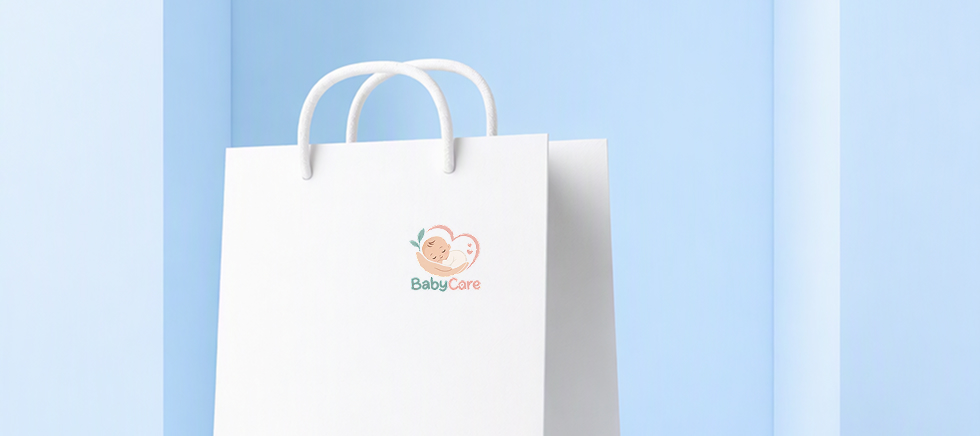
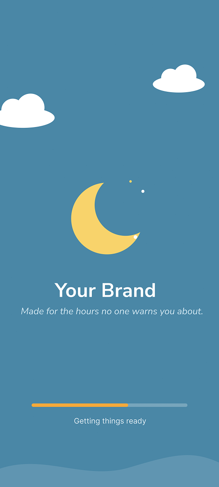
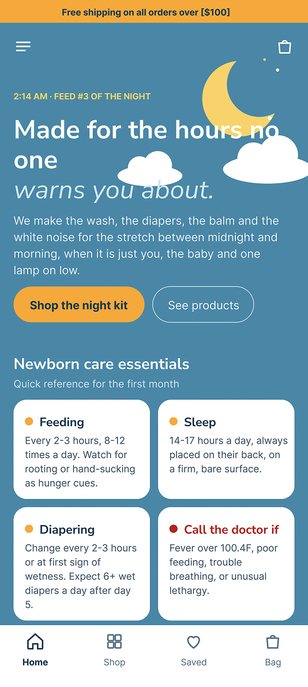
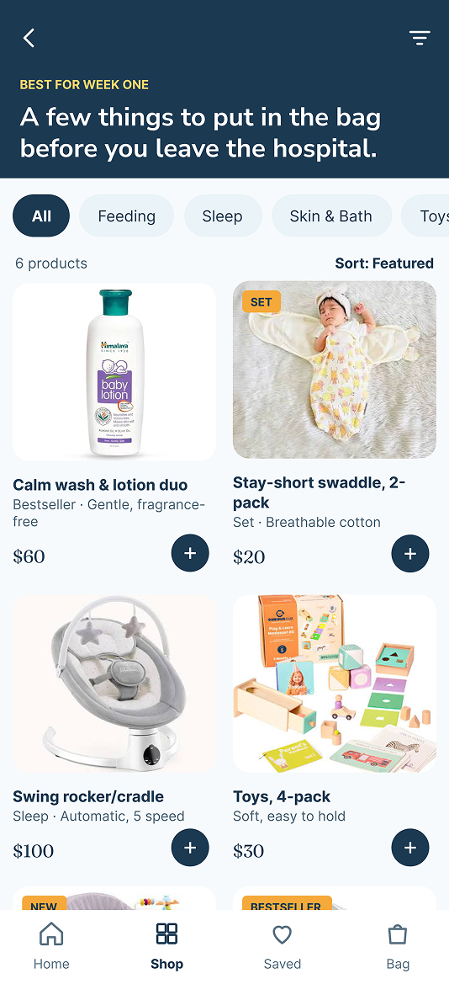
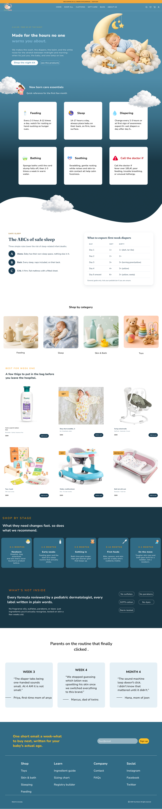

INTRO
Baby Care And Product Homepage Design
Designed with newborns and new parents in mind, this homepage brings together practical baby-care guidance, helpful tips for choosing suitable products, and dedicated newborn-care services. We help parents feel informed, supported, and confident as they care for their little ones.
PROBLEM
Parents often struggle to find reliable guidance at night or during emergencies, leaving them anxious and unsure of how to respond to their baby’s needs. With so much conflicting advice, it can be difficult to understand which baby care products to use or avoid. On hectic days, balancing work, household responsibilities, and caring for their baby becomes even more overwhelming when there is no one available to help or offer reassurance.
SOLUTION
We have added helpful guidance on caring for newborn babies so parents and caregivers can feel more confident during the first few weeks of their baby’s life. This includes practical advice on feeding, diaper changes, bathing, safe sleep, and keeping a baby comfortable, along with tips for understanding what newborns may enjoy, such as gentle cuddles, soothing voices, and calm surroundings. The guidance also explains how to recognise common hunger, tiredness, and discomfort cues, helping parents respond to their baby’s needs with greater understanding. To support everyday wellbeing, we have included information on observing feeding patterns, wet diapers, alertness, and changes in behaviour, as well as warning signs that require medical advice or urgent attention. Parents can also learn about age-appropriate feeding with breast milk or infant formula, recognising when their baby is hungry or full, and seeking professional support when feeding is difficult. By bringing this information together in one place, we aim to make newborn care easier to understand and help families build a gentle, reassuring routine, while reminding them that this guidance does not replace advice from a qualified healthcare professional.
DESIGN SYSTEM
This design section includes fonts, colors, the logo, and how the logo will look.

PHONE SCREEN
I designed three screens for the mobile version: a loading page, a home page, and a product page.



INTERACTION
You can check the whole homepage design—all you need to do is scroll within this frame.
